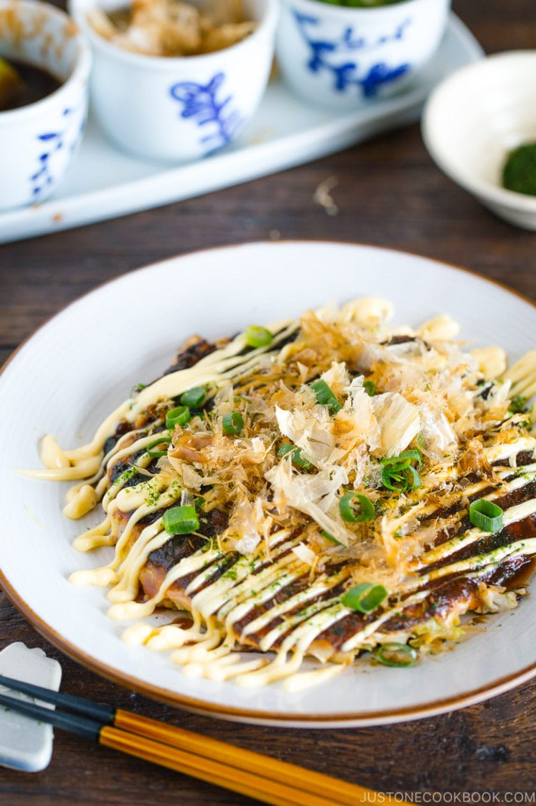

Okonomiyaki Recipe
Popular street food from Osaka, Japan, Okonomiyaki is a savory version of Japanese pancake, made with flour, eggs, shredded cabbage, and your choice of protein, and topped with a variety of condiments.

Among all the Osaka specialties, Takoyaki (たこ焼き) and Okonomiyaki (お好み焼き) are most well-known. Today I’m sharing my favorite Okonomiyaki recipe with you so you can make this popular street food at home!
What is Okonomiyaki?
Okonomiyaki (お好み焼き) is sometimes called “Japanese savory pancake” or “Japanese pizza”, but personally, I think it’s more like a dish between savory pancake and frittata.
It’s made with flour, eggs, tempura scraps (tenkasu), cabbage, and pork belly slices and topped with a variety of condiments like Okonomiyaki sauce, Japanese mayonnaise, dried seaweed, and dried bonito flakes.
If you don’t eat pork or prefer another protein choice, this dish is very adaptable. The possibility for the filling and topping choices are endless, which is why this dish in Japanese translates to “grilled as you like it” – Okonomi (as you like it) Yaki (grill).
6 Key Ingredients to Make Okonomiyaki
- Nagaimo (Yamaimo)
- Tenkasu (Tempura Bits/Scraps)
- Okonomiyaki Sauce
- Japanese Mayonnaise
- Katsuobushi (Dried Bonito Flakes)
- Aonori (Dried Green Seaweed)
Instructions
-
In a large bowl, combine all-purpose flour, salt, sugar, and baking powder and mix all together.
-
Peel and grate the nagaimo in a small bowl (I use this grater that I love). Note: I don't have any issues, but the nagaimo may irritate your skin and cause itchiness. Work quickly and rinse your hands immediately after touching the nagaimo. Nagaimo is very slimy and slippery, so make sure you have a good grip on the nagaimo if you wear kitchen gloves.
- Add the grated the nagaimo and dashi to the bowl.
-
Mix it all together until combined. Cover the bowl with plastic wrap and let it rest in the refrigerator for at least one hour. Tip: Resting the batter relaxes the gluten in the batter, improves the flavor, and makes the okonomiyaki fluffier. Some okonomiyaki shops refrigerate the batter overnight. Meanwhile, you can prepare the okonomiyaki sauce and other ingredients.
-
Meanwhile, gather all the ingredients for the okonomiyaki sauce.
-
Combine sugar, oyster sauce, ketchup, and Worcestershire sauce in a small bowl. Mix all together until the sugar is completely dissolved.
-
Discard the core of the cabbage and then mince the cabbage leaves.
-
Cut the pork belly slices in half and set aside.
-
After one hour, take out the batter from the refrigerator. Add eggs, tempura scraps (tenkasu/agedama), and pickled red ginger (kizami beni shoga) to the bowl. Mix until combined.
-
Add the minced cabbage to the batter, one-third of it at a time. Mix well before adding the rest.
-
In a large pan, heat the vegetable oil on medium heat. When the frying pan is hot (400ºF or 200ºC), spread the batter in a circle on the pan. We like thicker okonomiyaki (the final thickness is ¾ inches or 2 cm). If you’re new to making okonomiyaki, make it smaller and thinner so it’s easier to flip.
-
Place 2-3 slices of pork belly on top of the okonomiyaki and cook covered for 5 minutes.
-
When the bottom side is nicely browned, flip it over.
-
Gently press the okonomiyaki to fix its shape and keep it together. Cover and cook for another 5 minutes.
-
Flip it over one last time and cook uncovered for 2 minutes. If you’re going to cook the next batch, transfer the cooked okonomiyaki to a plate.